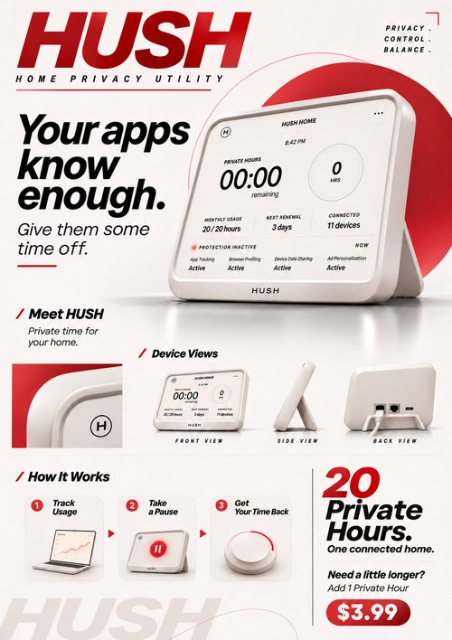
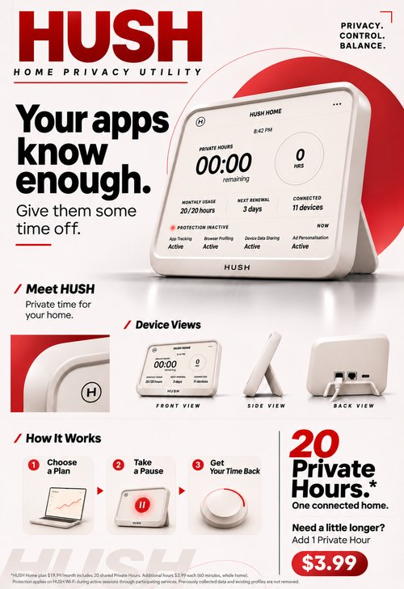

A full-page insert in a 2046 home and lifestyle magazine. The same artwork runs as an in-store poster beside the router shelf at electronics retailers. It sells HUSH the way routers and meal kits are sold today: cheerful, practical, and with the price up front.
What the ad shows, and what it leaves out
The hero device is shown at 00:00, with "Protection inactive" and every category Active. The ad treats running out as normal, even friendly: "Need a little longer? Add 1 Private Hour, $3.99." The three steps read Choose a Plan → Take a Pause → Get Your Time Back. In the ad, privacy is something you take a break into, not something you live in.
The fine print
*HUSH Home plan $19.99/month includes 20 shared Private Hours. Additional hours $3.99 each (60 minutes, whole home). Protection applies on HUSH Wi-Fi during active sessions through participating services. Previously collected data and existing profiles are not removed.
The asterisk on "20 Private Hours" carries the critique: the hours are shared, they depend on other companies taking part, and they cannot undo the past. Every number matches the interface and the quick-start guide.
08 · Process · Campaign variants and iterations
One campaign, several placements.
Exhibition poster. Warm night-time lifestyle version, printed and pinned above the model at the showcase.
Lifestyle magazine page. Same line, quieter type, with the 00:00 screen in a living room.
Product shot. First version of the white, antenna-free finished device.
How the insert was iterated
Jinge sketched the final layout. The poster was then iterated with AI image generation over six rounds, each with written feedback:
v2 · swap the photo steps for silhouette icons, remove the black band behind the hero, show ethernet ports on the back
v3 · rebuild on the new layout sketch
v4 · "How It Works" redone as minimal 3D, not hand-drawn
v5 · remove italics, rename step 1 "Choose a Plan", fix punctuation, add fine print
v5c · back view redrawn so the stand and cable no longer hide the ports
v2
v3

v4

v5
v5c, final
HUSH · Group UNLIMITEDAdvertisement · process
09 · Critical questions
Questions HUSH leaves on the shelf.
We don't answer these. The artefacts are built so that visitors reach them by using the device, not by reading a statement.
Q1 · SAVING
Is pausing to save hours a privacy choice or a tracking choice?
The Pause button is the most responsible-feeling control on the device, and it is also the one that switches tracking back on. The scenario turns on that moment.
Q2 · WORTH
Which moments are "worth an hour"?
A job search, a health question, a relationship, a late-night worry. Once privacy has a price, people start ranking their own lives by it. The guide even teaches how.
Q3 · HOUSEHOLD
Whose privacy is it when the clock is shared?
One person's private moment spends everyone's allowance. Keep me private and Step out are polite settings for an argument the household will have anyway.
Q4 · AFFORD
Who can afford to be private?
Personal, Home and Home+ turn privacy into a tier. Households that are already stretched will be tracked the most, and the report will show it as a number that grows each month.
Q5 · PERMANENCE
What does paying actually buy?
Only the future. Every plan page and the fine print say it plainly: previously collected data is not removed. Privacy becomes something you can only buy in advance.
Q6 · METADATA
Does privacy itself leave a trace?
HUSH keeps the start and end time of every session "for billing and service improvement". A log of when a household wanted privacy may say more than the searches would.
HUSH · Group UNLIMITEDCritical questions
10 · Presentation slides
Week 11 presentation
"UNLIMITED: Visitors from 2046". The original Week 11 deck, included unchanged as presented. It shows the earlier wall-hub version of HUSH. The device, interface and campaign above are the revised versions made after that presentation's feedback.